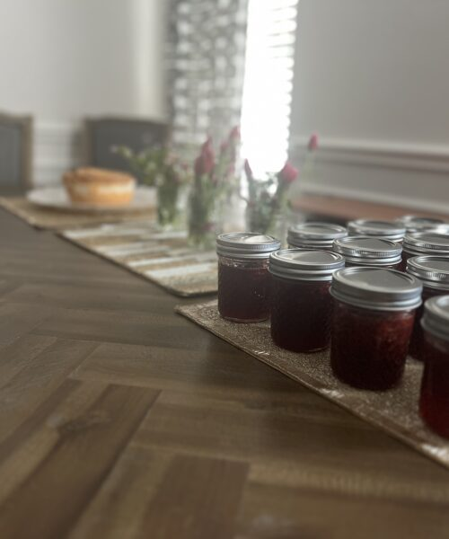
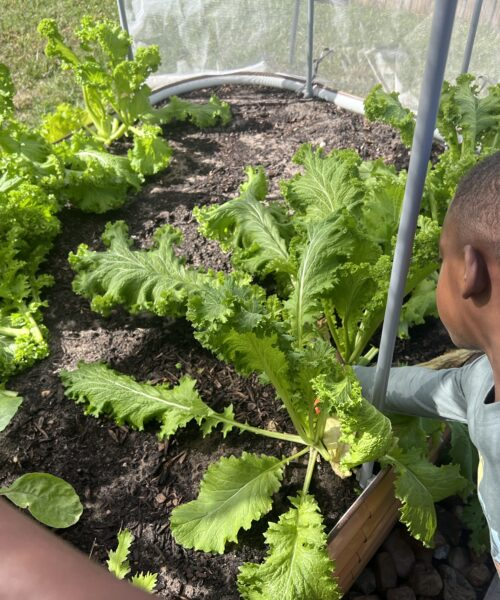
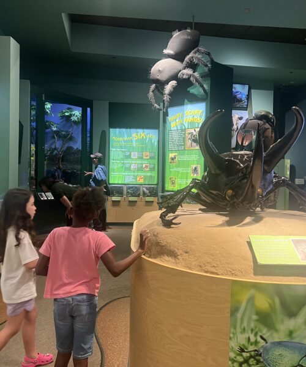

Join a live garden session with Dew of Heaven, then keep growing at home — with hands-on builds, playful activities, and projects that stay open all year.
🌻 Free for Dew of Heaven families · Spring, Texas



Every topic starts with a live session and opens into a whole world of things to build, sort, match, and grow.
From a seed the size of a freckle to a sunflower taller than you. Follow the whole journey.
Egg, caterpillar, chrysalis, butterfly — and the garden flowers that keep them coming back.
Meet the tadpoles in the garden pond and watch them grow legs, lungs, and a very loud voice.
Nature's recyclers. Find out how a worm turns yesterday's banana peel into next year's tomatoes.
No bees, no strawberries. Discover the tiny workers who make almost every meal possible.
Which part do we eat? Trace real food back to roots, stems, leaves, and flowers — then cook it.
Every topic moves through the same five stages, so children always know what comes next. Click through to see how far one topic goes.
Each step opens the next. Once something is open, it stays open — forever.
A grown-up makes one family account and adds each child by first name.
A quick, playful check of what they already know. No grades, no wrong answers shown.
The session opens right here on the platform. Real gardeners, real questions.
We say a secret word during the session. Type it in to unlock everything.
Activities, hands-on projects, and the session recording — all yours now.
The same questions again. Watch how much they grew, then keep it open all year.
Every child takes the same short quiz before the live session and again after they've explored. The difference between those two numbers is the thing funders ask for and almost nobody can produce.
Not attendance headcounts — actual before-and-after learning gain for every child who takes part.
Export a clean spreadsheet by session, by topic, or across the whole year.
Add a topic, paste your session link, drop in a video. No developer, no ticket, no waiting.
One free family account opens every live session, every activity, and every project — for as many children as you've got.